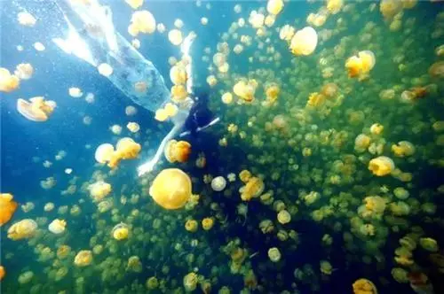
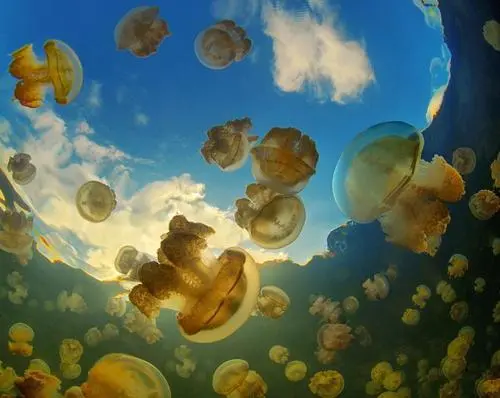
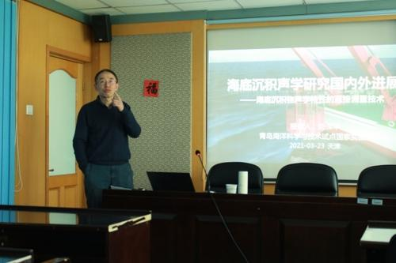
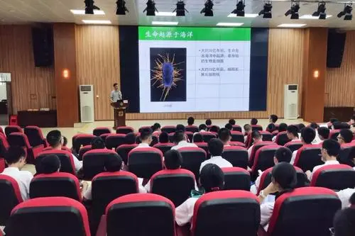
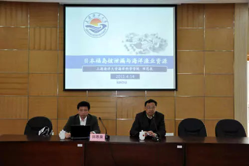
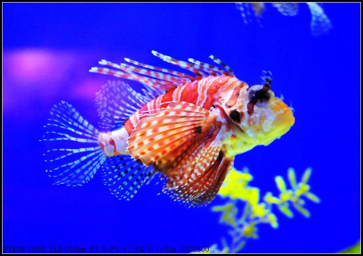
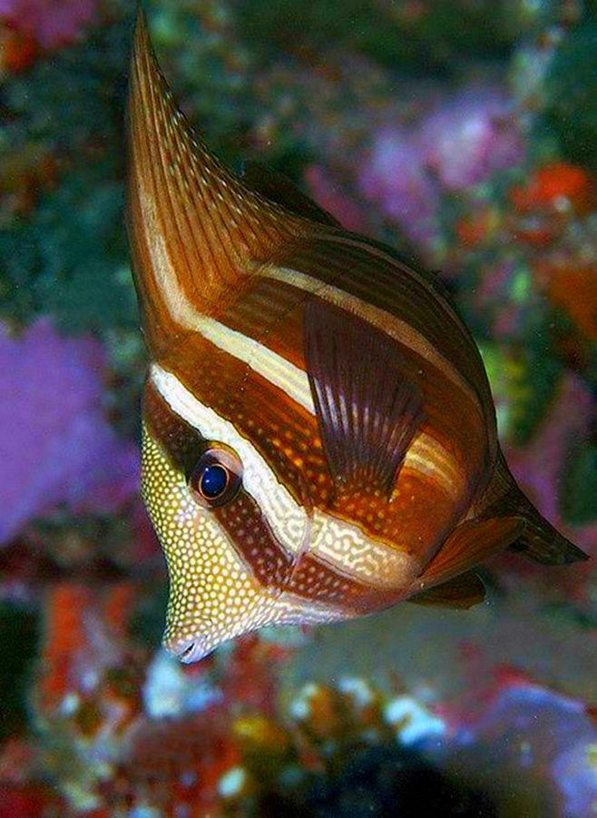
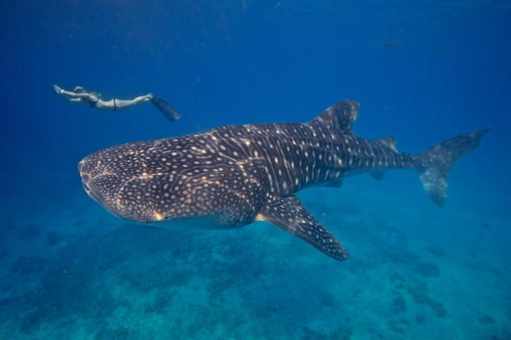

首页
濒危动物
新闻资讯
保护措施
海洋趣事
登录
注册
近日要闻:
多年未见的海洋保护动物重新回归 山东实施“蓝湾整治”...
近日要闻：
世界海洋日——以你之名，保护海洋动物！...
近日要闻：
地球上最长寿的脊椎动物，156岁才算成年...
近日要闻：
塑料污染日益严重，科学家警告：塑料袋对海洋动物最为致命...
近日要闻：
保护水生野生动物！160只海龟被放归大海...
新闻
福建省启动赤潮加密监测
海洋地质九号”船完成海试任务
中国“海牛Ⅱ号”海试成功 刷新世界纪录
中科院海洋所深海难培养微生物特殊生命过程认知
中心举办海底沉积声学专题讲座
随着天气逐步升温，福建海域进入赤潮高发期。近日，福建省2021年度赤潮加密监视监测首航次任务在宁德、福州、平潭、莆田等地同步开展。
随着天气逐步升温，福建海域进入赤潮高发期。近日，福建省2021年度赤潮加密监视监测首航次任务在宁德、福州、平潭、莆田等地同步开展。
随着天气逐步升温，福建海域进入赤潮高发期。近日，福建省2021年度赤潮加密监视监测首航次任务在宁德、福州、平潭、莆田等地同步开展。
随着天气逐步升温，福建海域进入赤潮高发期。近日，福建省2021年度赤潮加密监视监测首航次任务在宁德、福州、平潭、莆田等地同步开展。
随着天气逐步升温，福建海域进入赤潮高发期。近日，福建省2021年度赤潮加密监视监测首航次任务在宁德、福州、平潭、莆田等地同步开展。
4月7日17时，重约2.4吨的深海移动式电视抓斗被钢缆吊起并缓缓回收至甲板。至此，“海洋地质九号”船2021年南海海试第二航段11套设备海试任务全部完成。
4月7日17时，重约2.4吨的深海移动式电视抓斗被钢缆吊起并缓缓回收至甲板。至此，“海洋地质九号”船2021年南海海试第二航段11套设备海试任务全部完成。
4月7日17时，重约2.4吨的深海移动式电视抓斗被钢缆吊起并缓缓回收至甲板。至此，“海洋地质九号”船2021年南海海试第二航段11套设备海试任务全部完成。
4月7日17时，重约2.4吨的深海移动式电视抓斗被钢缆吊起并缓缓回收至甲板。至此，“海洋地质九号”船2021年南海海试第二航段11套设备海试任务全部完成。
4月7日17时，重约2.4吨的深海移动式电视抓斗被钢缆吊起并缓缓回收至甲板。至此，“海洋地质九号”船2021年南海海试第二航段11套设备海试任务全部完成。
4月7日17时，重约2.4吨的深海移动式电视抓斗被钢缆吊起并缓缓回收至甲板。至此，“海洋地质九号”船2021年南海海试第二航段11套设备海试任务全部完成。
中新网长沙4月8日电(傅煜 唐亚慧 李凌蕴)湖南科技大学8日对外透露，由该校领衔研发的中国首台“海牛Ⅱ号”海底大孔深保压取芯钻机系统，于北京时间4月7日23时许在南海超2000米深水成功下钻231米，刷新世界深海海底钻机钻探深度。
中新网长沙4月8日电(傅煜 唐亚慧 李凌蕴)湖南科技大学8日对外透露，由该校领衔研发的中国首台“海牛Ⅱ号”海底大孔深保压取芯钻机系统，于北京时间4月7日23时许在南海超2000米深水成功下钻231米，刷新世界深海海底钻机钻探深度。
中新网长沙4月8日电(傅煜 唐亚慧 李凌蕴)湖南科技大学8日对外透露，由该校领衔研发的中国首台“海牛Ⅱ号”海底大孔深保压取芯钻机系统，于北京时间4月7日23时许在南海超2000米深水成功下钻231米，刷新世界深海海底钻机钻探深度。
中新网长沙4月8日电(傅煜 唐亚慧 李凌蕴)湖南科技大学8日对外透露，由该校领衔研发的中国首台“海牛Ⅱ号”海底大孔深保压取芯钻机系统，于北京时间4月7日23时许在南海超2000米深水成功下钻231米，刷新世界深海海底钻机钻探深度。
中新网长沙4月8日电(傅煜 唐亚慧 李凌蕴)湖南科技大学8日对外透露，由该校领衔研发的中国首台“海牛Ⅱ号”海底大孔深保压取芯钻机系统，于北京时间4月7日23时许在南海超2000米深水成功下钻231米，刷新世界深海海底钻机钻探深度。
前，国际生物学期刊The ISME Journal刊发了题为“Characterization of the first cultured free-living representative of Candidatus Izemoplasma uncovers its unique biology”的文章，文章报道了中科院海洋所孙超岷课题组关于深海难培养微生物-软壁菌门（Tenericutes）细菌首次纯培养及其特殊生命过程的研究成果，为突破深海难培养微生物的培养瓶颈及深入了解深海稀有微生物类群的环境适应机制提供了重要理论依据和研究范例。
前，国际生物学期刊The ISME Journal刊发了题为“Characterization of the first cultured free-living representative of Candidatus Izemoplasma uncovers its unique biology”的文章，文章报道了中科院海洋所孙超岷课题组关于深海难培养微生物-软壁菌门（Tenericutes）细菌首次纯培养及其特殊生命过程的研究成果，为突破深海难培养微生物的培养瓶颈及深入了解深海稀有微生物类群的环境适应机制提供了重要理论依据和研究范例。

前，国际生物学期刊The ISME Journal刊发了题为“Characterization of the first cultured free-living representative of Candidatus Izemoplasma uncovers its unique biology”的文章，文章报道了中科院海洋所孙超岷课题组关于深海难培养微生物-软壁菌门（Tenericutes）细菌首次纯培养及其特殊生命过程的研究成果，为突破深海难培养微生物的培养瓶颈及深入了解深海稀有微生物类群的环境适应机制提供了重要理论依据和研究范例。

前，国际生物学期刊The ISME Journal刊发了题为“Characterization of the first cultured free-living representative of Candidatus Izemoplasma uncovers its unique biology”的文章，文章报道了中科院海洋所孙超岷课题组关于深海难培养微生物-软壁菌门（Tenericutes）细菌首次纯培养及其特殊生命过程的研究成果，为突破深海难培养微生物的培养瓶颈及深入了解深海稀有微生物类群的环境适应机制提供了重要理论依据和研究范例。
前，国际生物学期刊The ISME Journal刊发了题为“Characterization of the first cultured free-living representative of Candidatus Izemoplasma uncovers its unique biology”的文章，文章报道了中科院海洋所孙超岷课题组关于深海难培养微生物-软壁菌门（Tenericutes）细菌首次纯培养及其特殊生命过程的研究成果，为突破深海难培养微生物的培养瓶颈及深入了解深海稀有微生物类群的环境适应机制提供了重要理论依据和研究范例。

2020年是新中国历史上极不平凡的一年，面对突如其来的新冠肺炎疫情和严峻复杂的国际环境，沿海地区和有关部门以习近平新时代中国特色社会主义思想为指导，全面贯彻党的十九大和十九届二中、三中、四中、五中全会精神，深入落实习近平总书记关于海洋经济的重要指示批示精神，扎实做好“六稳”工作，全面落实“六保”任务，海洋经济发展逐季恢复，结构持续优化，表现出较强韧性，海洋经济高质量发展态势得到进一步巩固。
2020年是新中国历史上极不平凡的一年，面对突如其来的新冠肺炎疫情和严峻复杂的国际环境，沿海地区和有关部门以习近平新时代中国特色社会主义思想为指导，全面贯彻党的十九大和十九届二中、三中、四中、五中全会精神，深入落实习近平总书记关于海洋经济的重要指示批示精神，扎实做好“六稳”工作，全面落实“六保”任务，海洋经济发展逐季恢复，结构持续优化，表现出较强韧性，海洋经济高质量发展态势得到进一步巩固。

2020年是新中国历史上极不平凡的一年，面对突如其来的新冠肺炎疫情和严峻复杂的国际环境，沿海地区和有关部门以习近平新时代中国特色社会主义思想为指导，全面贯彻党的十九大和十九届二中、三中、四中、五中全会精神，深入落实习近平总书记关于海洋经济的重要指示批示精神，扎实做好“六稳”工作，全面落实“六保”任务，海洋经济发展逐季恢复，结构持续优化，表现出较强韧性，海洋经济高质量发展态势得到进一步巩固。
2020年是新中国历史上极不平凡的一年，面对突如其来的新冠肺炎疫情和严峻复杂的国际环境，沿海地区和有关部门以习近平新时代中国特色社会主义思想为指导，全面贯彻党的十九大和十九届二中、三中、四中、五中全会精神，深入落实习近平总书记关于海洋经济的重要指示批示精神，扎实做好“六稳”工作，全面落实“六保”任务，海洋经济发展逐季恢复，结构持续优化，表现出较强韧性，海洋经济高质量发展态势得到进一步巩固。

2020年是新中国历史上极不平凡的一年，面对突如其来的新冠肺炎疫情和严峻复杂的国际环境，沿海地区和有关部门以习近平新时代中国特色社会主义思想为指导，全面贯彻党的十九大和十九届二中、三中、四中、五中全会精神，深入落实习近平总书记关于海洋经济的重要指示批示精神，扎实做好“六稳”工作，全面落实“六保”任务，海洋经济发展逐季恢复，结构持续优化，表现出较强韧性，海洋经济高质量发展态势得到进一步巩固。
濒危动物
玳瑁龟
北极熊
儒艮
革龟
水獭
淡水苏眉鱼
蓝鲸
目前，世界只生存着不到50头的蓝鲸。
1、加湾鼠海豚：加湾鼠海豚属于稀有的鼠海豚属，是加利福尼亚湾北部的特有种，
2、儒艮：儒艮有着“美人鱼”的称号，和海牛非常相似，目前主要分布在热带海域地区。
3、蓝鳍金枪鱼：蓝鳍金枪鱼主要分布在太平洋和大西洋等海域之中，栖息的深度不一，喜欢成群活动。
4、蓝鲸：蓝鲸是目前世界上最大的生物，每日的进食量就能达到4吨以上，其体重最重能够达到200多吨。
水獭
当时只有幸卖1000到2.000只海搬。
5、玳瑁：玳瑁体型较大，背甲曲线长度65-85厘米，体重45-75千克，主要栖息于沿海的珊瑚礁、海湾、河口和清澈的泻湖。
6、新西兰海狮：新西兰海狮主要分布在新西兰的南极群岛，由于生存的环境以及捕杀问题，升级成为了濒危物种，并且被收录到了濒危物种红色目录之中。
7、黄唇鱼：黄唇鱼是仅存在于国内的鱼种，长相很特殊，在2006年被列入到了濒危海洋动物之中，为国家二级保护动物。
8、麋角珊瑚：麋角珊瑚主要分布在加勒比海域，属于罕见生物，很难在其他海域见到了，目前面临着灭绝的危机。
海鸟类
海燕
小军舰鸟
海雀
红喉潜鸟
黑脚信天翁
海鸥
哺乳类
白鲸
白熊
海豹
海狗
海牛
海狮
海豚
海象
虎鲸
蓝鲸
抹香鲸
儒艮
小温鲸
一角鲸
中华白海豚
座头鲸
保护措施
防止、减轻和控制海上养殖污染
防止和控制沿海工业污染物污染海域环境
防止和控制沿海城市污染物污染海域环境
防止、减轻和控制沿海农业污染物污染海域环境
加湾鼠海豚
被称为“海洋熊猫”。
儒艮
类的捕杀，导致儒艮逐渐成为了濒危生物
蓝鳍金枪鱼
由于过度的捕捞，被列入到保护对象之中
蓝鲸
蓝鲸在全世界的数量不到50头。
玳瑁
过度的捕捞使玳瑁已经成为濒危物种。
麋角珊瑚
麋角珊瑚主要分布在加勒比海域，属于罕见生物
杂志
海洋探索
遗产
博物
海洋保护微信公众号平台
订阅号
服务号
使用微信扫描二维码进行关注，或微信中
搜索“海洋保护”关注。
活动
海洋保护活动
海洋保护活动
海洋保护活动
海洋保护活动
活动
海洋保护活动
海洋保护活动
海洋保护活动
海洋保护活动
海洋动物
海洋动物
海洋动物
海洋动物
海洋动物
海洋动物
海洋动物
海洋动物
海洋动物

海洋动物
海洋动物

海洋动物
海洋动物
海洋动物
海洋动物
海洋动物
海洋动物
海洋动物
海洋动物

海洋动物
海洋动物
海洋动物
海洋动物
海洋动物
海洋动物
海洋动物
海洋动物
海洋动物
海洋动物
海洋动物
海洋动物
海洋动物
海洋动物
查看
更多